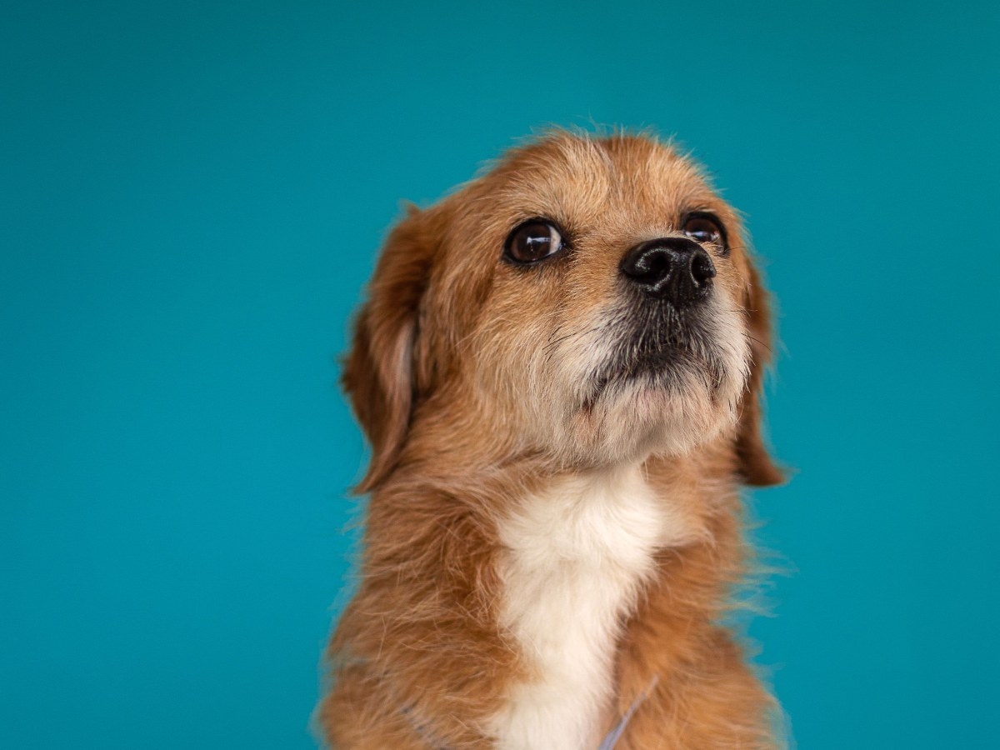
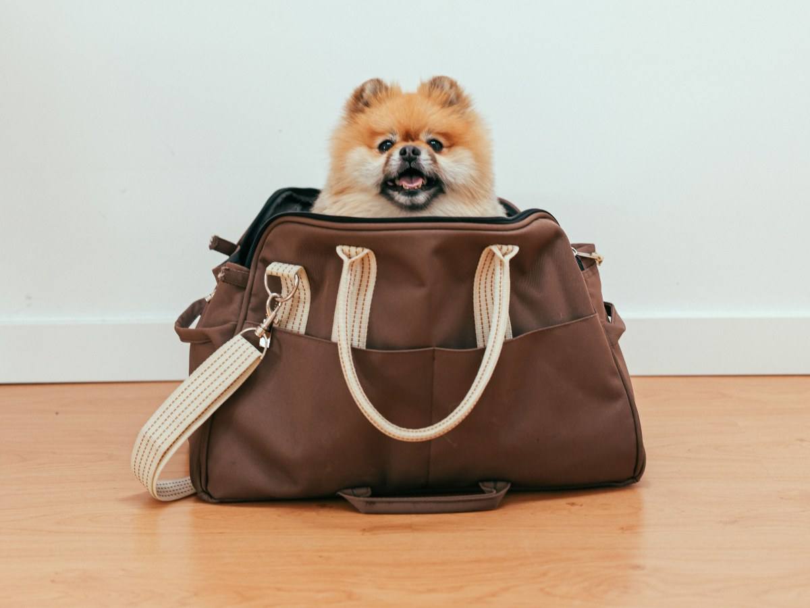
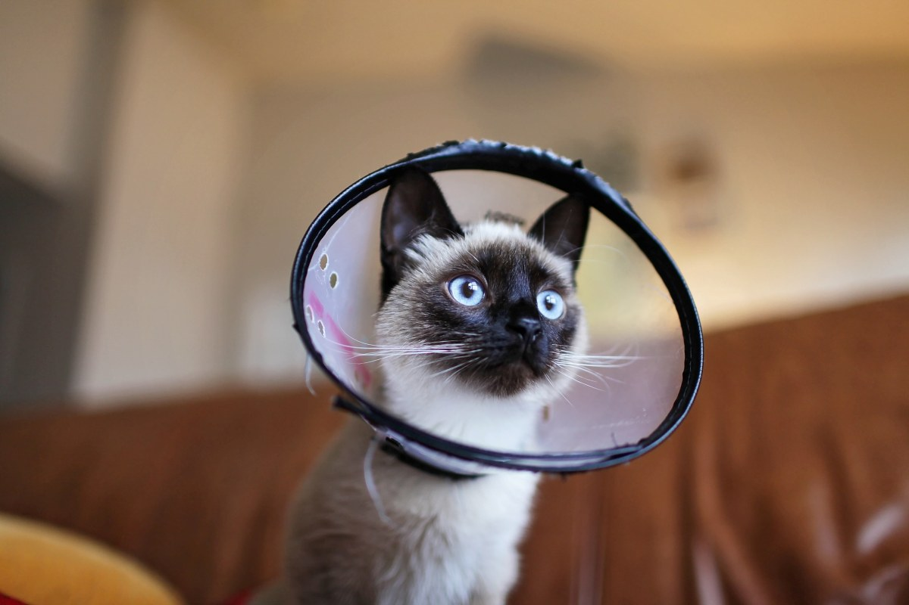
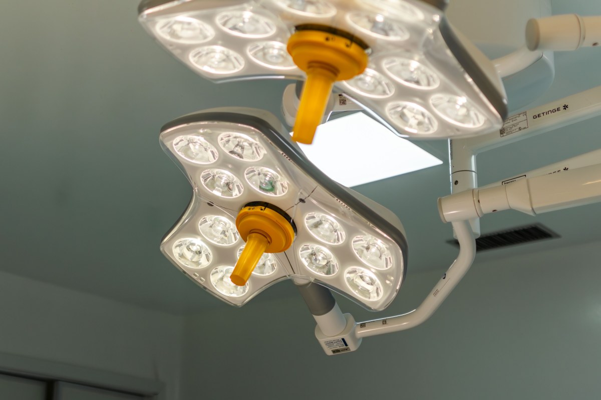
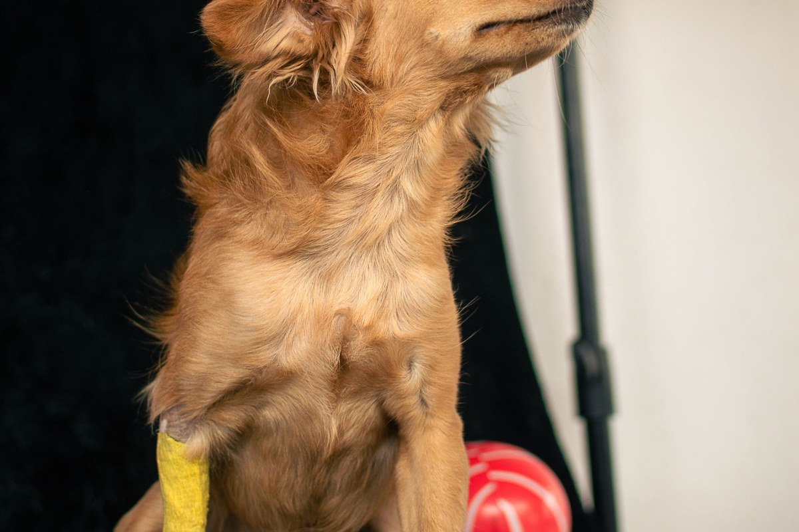
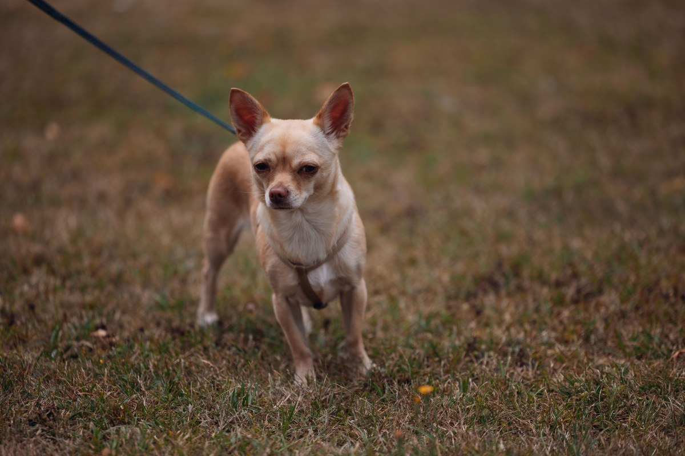

Puente Alto · Arturo Prat 87
El día de la cirugía, contado con calma.
Una clínica veterinaria abierta los siete días de la semana.
- 518reseñas en Google
- 7días abierta a la semana
- 2.588seguidores en Instagram
- 0dominios propios: sólo su ficha en una agenda ajena
Tranquilidad por escrito
El día de la cirugía
Cinco momentos: usted sabe qué le toca en cada uno.
- LA NOCHE ANTES
Ayuno
Las horas se las indica la clínica.
- EN LA MAÑANA
La entrega
Llegue a la hora y deje su teléfono.
- LA OPERACIÓN
Usted espera
La clínica le avisa cuando termina.
- DESPUÉS
Recuperación
Despierta tranquilo, acompañado.
- EL ALTA
A la casa
Con las indicaciones por escrito.
Cada caso lo explica la clínica antes de operar.
Lo más difícil es esperar.
En Arturo Prat 87
Lo que hay en N&Q Pets
-

Lo que la distingue
Cirugía
Y hospitalización.
-

Para empezar
Consulta
Perros y gatos.
-

Para prevenir
Vacunas
Junto con la consulta.
-

Por dentro
Exámenes
Y ecografía.
-

Especialidad
Cardiología
Para el corazón.
-

También
Corte de uñas
Con hora en su agenda.
Servicios de su agenda en AgendaPro.
518 reseñas en Google.
Arturo Prat 87, Puente Alto
Manta, paseo y control
Un día en la clínica




Fotos de referencia: ninguna es de la clínica.
Dónde estamos
Arturo Prat 87, Puente Alto
- Lunes a viernes
- 10–19
- Sábado
- 11–18
- Domingo
- 11–15
- +56 9 4460 0385
Horario de su agenda en línea: la hora se pide ahí o por WhatsApp.
Arturo Prat 87, Puente Alto Abrir en Google Maps
Para el dueño
Qué es real y qué falta
Lo verificado
Dirección, teléfonos, horario y servicios de su AgendaPro, y las 518 reseñas.
Lo de ejemplo
La guía del día de la cirugía y las fotos.
Lo que falta
El equipo, fotos del pabellón y un dominio a su nombre.